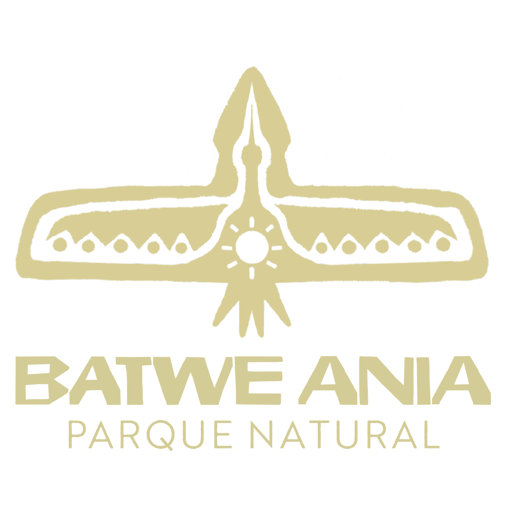
Un proyecto comunitario que busca establecer el primer parque natural de Cajeme.
"Batwe Ania" significa "Universo del Río" en lengua Yoeme Yaqui.
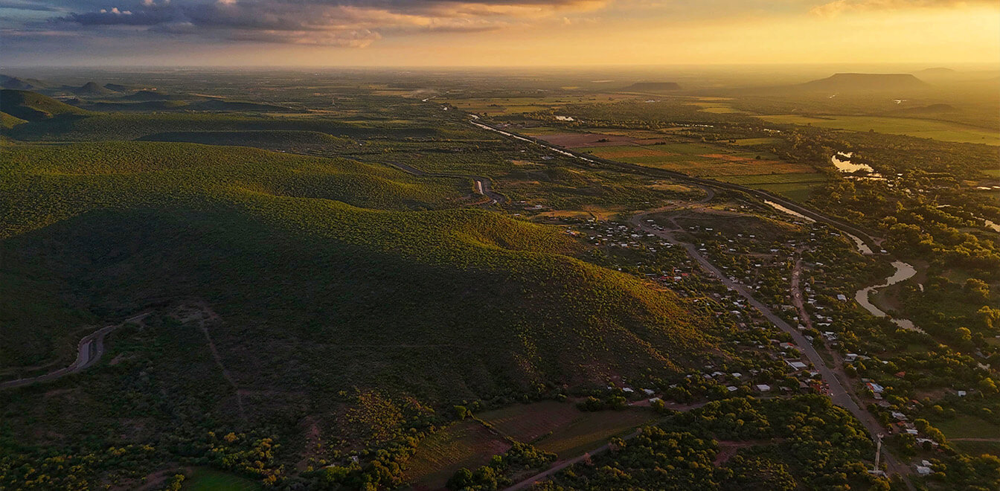
¿Por qué aquí?
En el pueblo de Los Hornos, se encuentra el inicio y final del Río Yaqui, y su riqueza natural justifica el proyecto: El último sistema ripario y última selva baja caducifolia que queda del Río Yaqui. Punto clave en el sur de Sonora para anidación de aves y biodiversidad.
Misión
La riqueza no solo está en la naturaleza sino en las personas y el vínculo colaborativo.
- check_circle Sensibilizar a nuevas generaciones y reconectar con las raíces.
- check_circle Crear un puente entre la cosmovisión Yoeme Yaqui y los nuevos actores.
- check_circle Hacer un pueblo más habitable y feliz.
- check_circle Que sea sostenible por la misma comunidad.
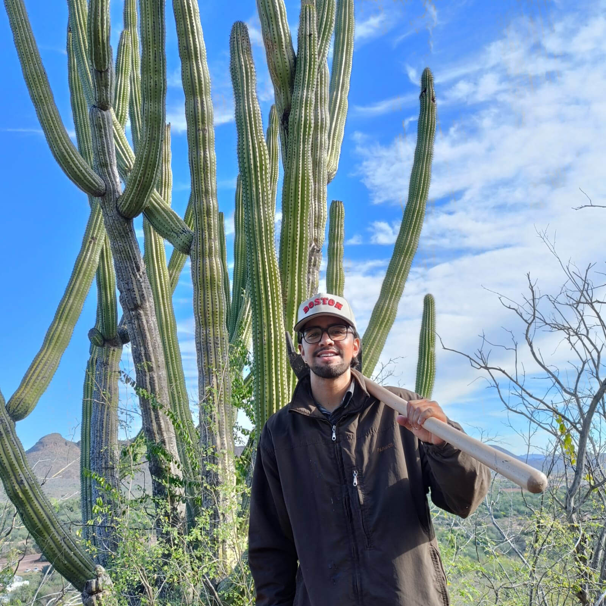
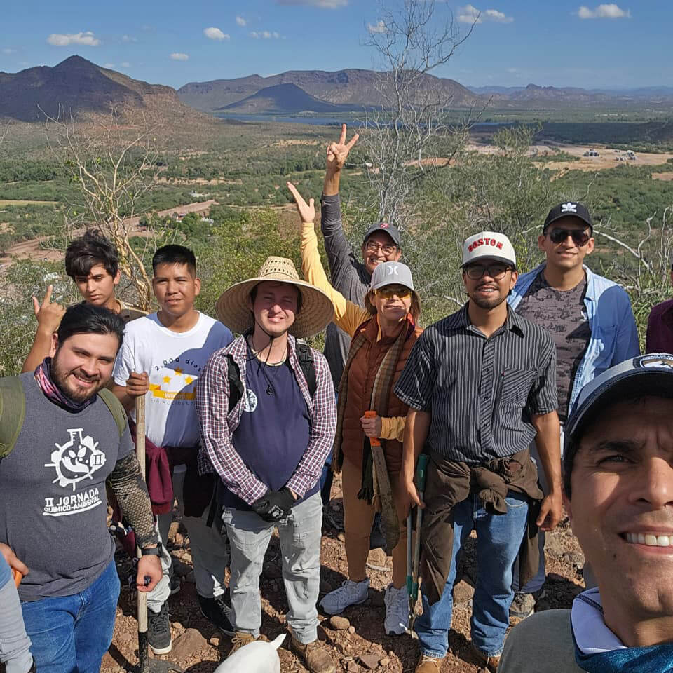
¿Qué hemos logrado?
Los logros concretos del proyecto hasta ahora:
- check_circle Rehabilitación del centro de salud del pueblo.
- check_circle Rehabilitación de áreas verdes y reforestación.
- check_circle Vivero comunitario.
- check_circle Talleres gratuitos (etnobotánica, meditación, avistamiento de aves, danza).
- check_circle Eventos culturales.
- check_circle Murales de biodiversidad y cosmovisión Yaqui en el corredor principal por artistas locales.
Súmate al Voluntariado
No se necesita experiencia, solo ganas de hacer algo por la tierra.
Estamos creando el primer sendero ecológico del Parque Batwe Ania y necesitamos tus manos para hacerlo realidad.
Nos coordinamos a través de un grupo de WhatsApp donde compartimos las necesidades del proyecto y organizamos las jornadas de trabajo.
Únete al grupo de WhatsAppFotos
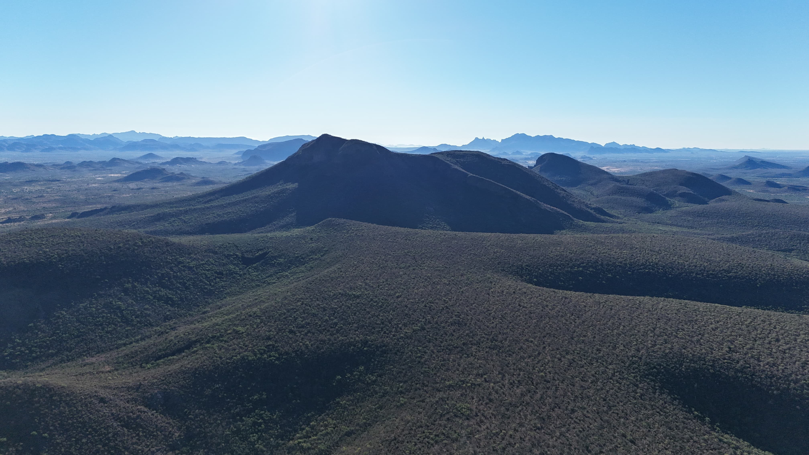
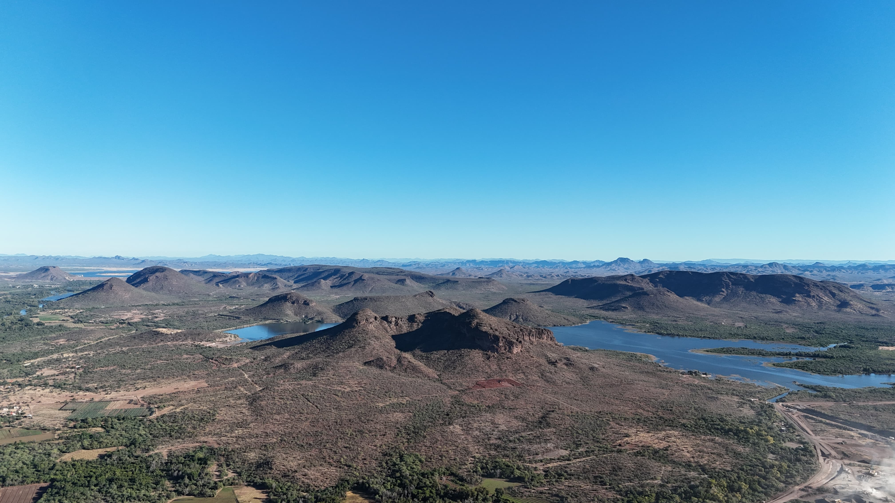
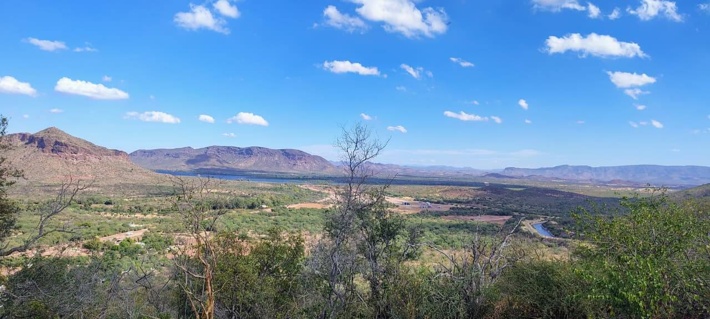
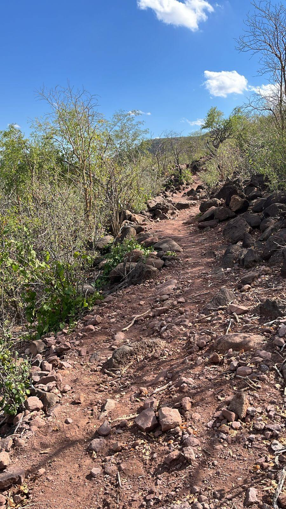
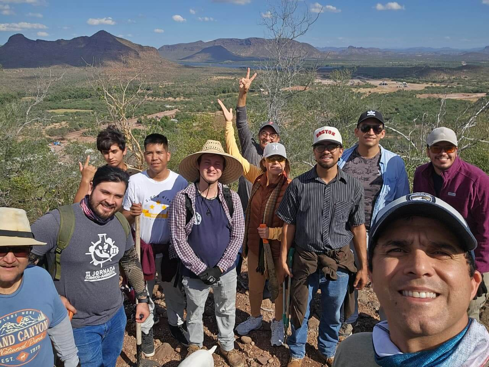
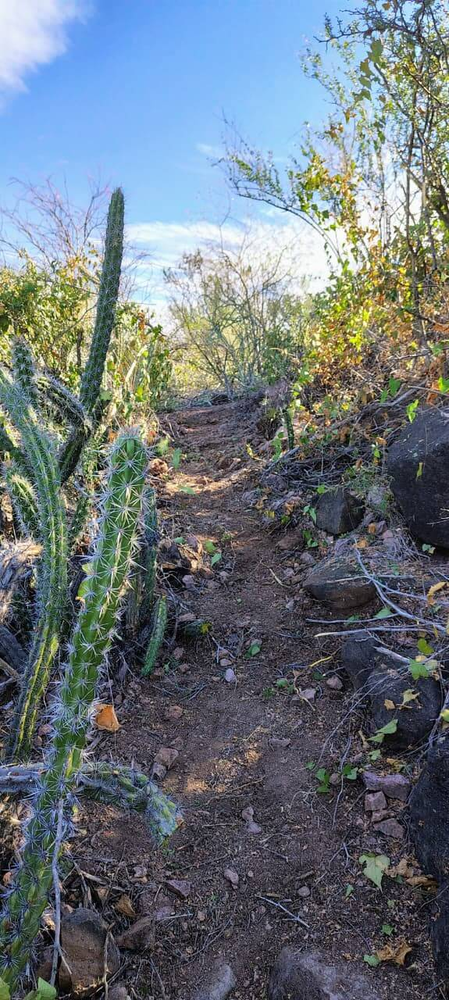
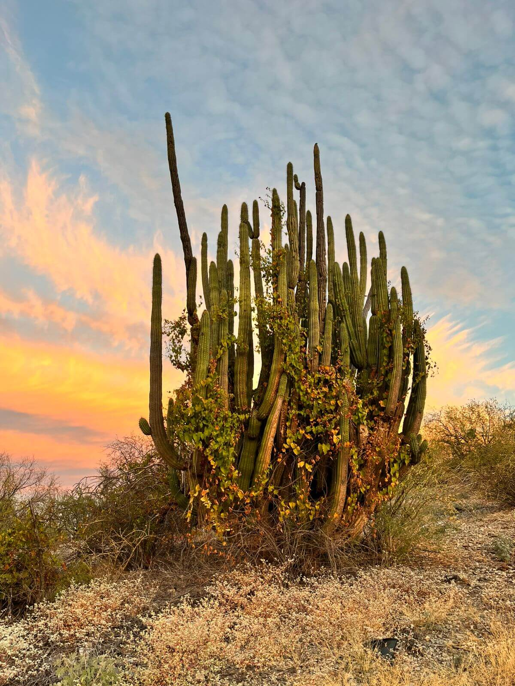
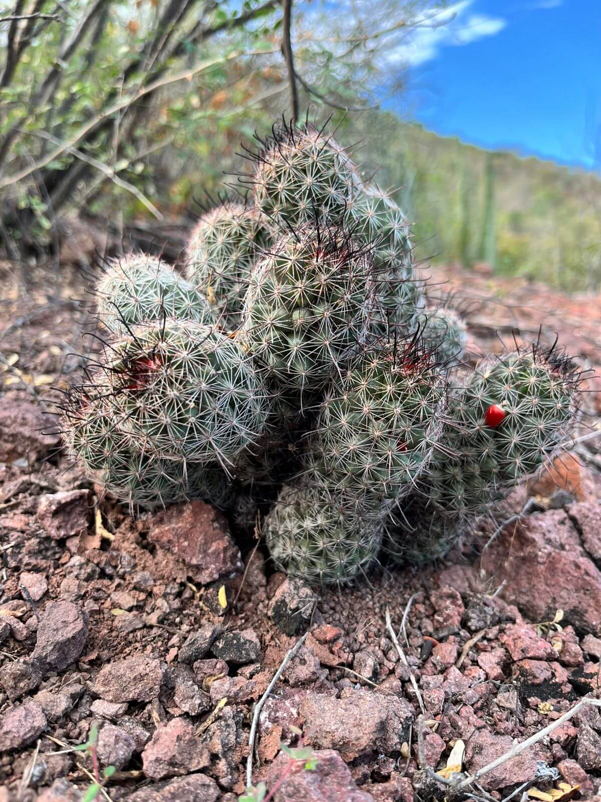
Contáctanos
¿Deseas organizar una visita escolar, un retiro de investigación o simplemente saber más sobre nuestro trabajo? Escríbenos por Instagram.